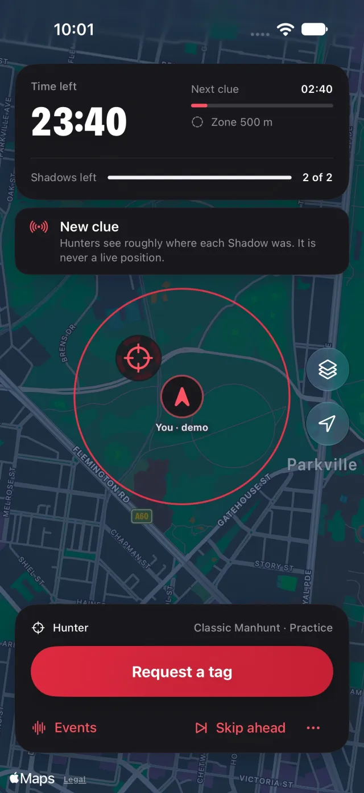
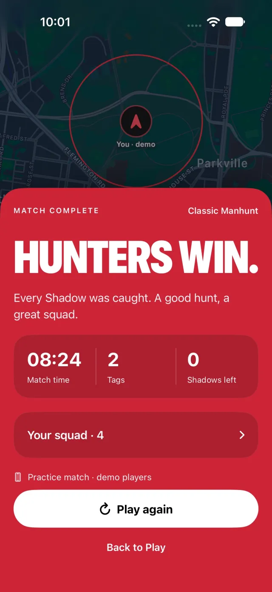

Hunters
Follow the clues and find every Shadow before the clock runs out. Briefings and wins are shown in red.
A native iPhone game of real-world hide-and-seek. I designed the game, the interface and the backend that keeps every player's position private.



Test counts are simulator runs. Two-phone outdoor play is still being tested.
Two teams play outside in a shared zone. Hunters chase; Shadows hide. Hunters never see a live position, only an approximate clue of where each Shadow was, delivered on a timer. The zone shrinks, the clock runs down, and a tag is a real touch that both phones then confirm.
Follow the clues and find every Shadow before the clock runs out. Briefings and wins are shown in red.
Stay hidden inside the zone. If one Shadow survives to the deadline, the Shadows win. Their screens are black.
Clues are delayed and approximate, the clock only starts when you tap Start match, and every tag needs both players to confirm.
Each mode changes the pace and how much information Hunters get. Hosts can also adjust round length, head start, clue interval and zone size.
| Mode | Round | Head start | Clues | When a Shadow is tagged |
|---|---|---|---|---|
| Classic Manhunt | 30 min | 3 min | From minute 6, then every 3 min | Becomes a spectator |
| Infection | 20 min | 2 min | From minute 5, then every 3 min | Joins the Hunters |
| Blackout | 15 min | 2 min | None. Hunters feel a vibration that grows stronger when a Shadow is near | Becomes a spectator |
A small palette that reads outdoors at a glance: red for Hunters, black for Shadows, white for the action you take next.
SF typography, SF Symbols, native sheets and haptics, and Liquid Glass controls on iOS 26, with Light, Dark and Reduce Motion support.
A nine-chapter guide plays a scripted match in a 3D night-city scene, using the same match display as the real game.
Help & safety is one tap away in setup and during a match, with an emergency call button and your current street address.
SwiftUI with MapKit: player setup, match setup with picture cards for modes and characters, the live match display, tag confirmation, match reports and rematches. Practice mode works offline with demo players.
A Supabase backend is the referee for every live match. Row-level security protects every table, exact positions are stored privately, and tags need a recent proximity check plus the Shadow's confirmation.
PostgreSQL with row-level security, authenticated Edge Functions for every match action, private Realtime channels, server-set deadlines and protection against duplicate or racing requests. It's covered by database, request-handler and full-stack tests.
A full two-iPhone outdoor match, account deletion with a real account, and how the vibration feels on a physical phone. GPS sent by a phone still isn't proof of where that phone is, which is why tags also need the other player to confirm.
Swift · SwiftUI · MapKit · Supabase · PostgreSQL · Edge Functions · XcodeGen